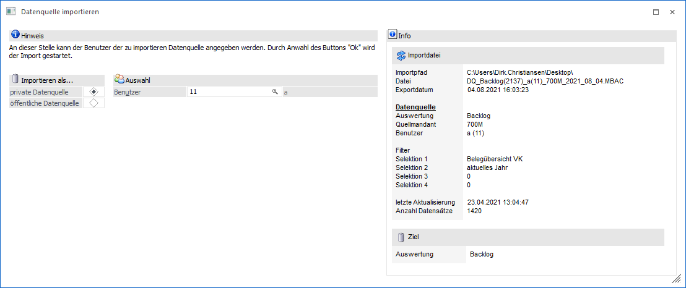
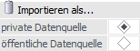
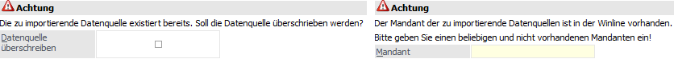
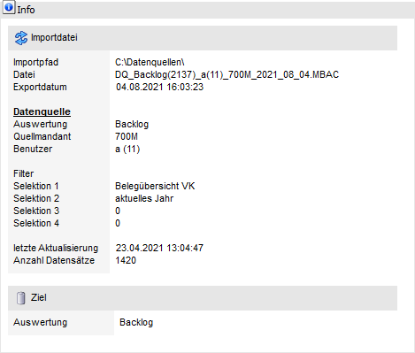

Mit Hilfe des Buttons "Datenquelle importieren" kann eine Datenquelle des Typs "Snapshot" für die gewählte Auswertung importiert werden. Nach einer Dateiauswahl per Windowsdialog (*.MBAC-Datei) steht hierfür das Fenster "Datenquelle importieren" zur Verfügung.
Achtung
Folgende Voraussetzungen sind für das Importieren von Datenquellen zu erfüllen:
ü Der Import kann nur von Voll- oder Datenadministratoren durchgeführt werden.
ü Für die Auswertung, für welche ein Import vorgenommen werden soll, muss zumindest eine Datenquelle für den Benutzer existieren und in der Tabelle "Datenquellen" ersichtlich sein!
ü Der Dateiaufbau der zu importierenden Datenquelle muss jenem der Zielauswertung entsprechen!
ü Es können nur Datenquellen von Mandanten importiert werden, welche in der WinLine nicht existieren. Sollte eine Datenquelle eines bestehenden Mandanten importiert werden, so kann der Mandant während des Imports angepasst werden (siehe Bereich "Achtung").
Hinweis
Importierte Datenquellen sind vom Benutzer immer sichtbar, sobald ein grundsätzliches Zugriffsrecht auf die Auswertung besteht!

Folgende Einstellungen stehen zur Verfügung:
Importieren als…

Ø private Datenquelle / öffentliche Datenquelle
An dieser Stelle wird definiert, ob die zu importierende Datenquellen für einen Benutzer importiert werden soll (Auswahl "private Datenquelle") oder zukünftig allen Benutzern zur Verfügung steht (Auswahl "öffentliche Datenquelle").
Auswahl
Ø Benutzer
Wenn die Datenquelle für einen Benutzer importiert werden soll, so muss an dieser Stelle der Benutzer angegeben werden.
Achtung

In dem Bereich "Achtung" werden Probleme aufgezeigt, durch welche ein Import grundsätzlich nicht möglich ist. Mit Hilfe von Einstellungen kann den Problemen zum Teil entgegengewirkt werden.
ü Die Applikation der zu
importierenden Datenquelle stimmt nicht mit der Zielapplikation überein.
Es
wird versucht ein Datenquelle des z.B. "Backlogs" (WinLine FAKT Auswertung) in
eine "List-Auswertung" (WinLine LIST-Liste) zu importieren. Dieses ist technisch
nicht möglich, wodurch ein Import unterbunden wird (Button "Ok" ist
gesperrt).
ü Die zu importierende Datenquelle
existiert bereits.
Es wird versucht eine existierende Datenquelle nochmals zu
importieren. Mit Hilfe der Option "Datenquelle überschrieben" kann dieses
erlaubt werden.
ü Der Mandant der zu importierenden
Datenquelle ist in der WinLine vorhanden.
Es wird versucht eine Datenquelle
eines in der WinLine existierenden Mandanten zu importieren. Mit Hilfe des
Eingabefelds "Mandant" kann ein neues Mandantenkürzel für den Import vergeben
werden.
Ø Datenquelle überschreiben
Durch Aktivierung dieser Option wird die in der WinLine bereits existierende / gleichlautende Datenquelle überschrieben.
Ø Mandant
An dieser Stelle kann ein neues 4stelliges Mandantenkürzel, welches in der WinLine nicht existiert, vergeben und bestätigt werden. Das Kürzel darf hierbei keine Sonderzeichen beinhalten, d.h. muss aus Zahlen und / oder Buchstaben bestehen.
Info

In dem Bereich "Info" werden diverse Information bezüglich der zu importierenden Datenquellen ausgewiesen.
Buttons

Ø Ok
Durch Anwahl des Buttons "Ok" bzw. der Taste F5 wird die Datenquelle importiert. Sollte der Button gesperrt sein, so liegen in dem Bereich "Achtung" weitere Informationen vor.
Ø Ende
Bei Anwahl des Buttons "Ende" bzw. der Taste ESC wird das Fenster geschlossen.